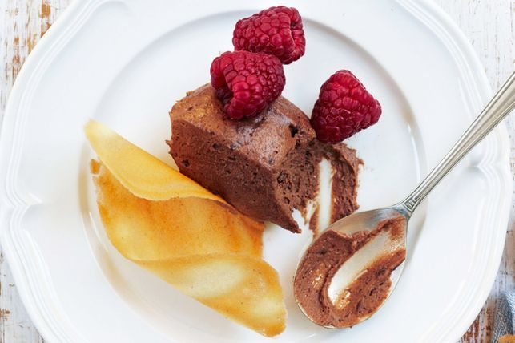

Lemon chocolate tart with creme fraiche

Description
Savour the flavors of chocolate and lemon in this easy to make lemon chocolate tart with creme fraiche by Curtis Stone.
Ingredients
- 1 1/2 cups plain flour
- 1/4 tsp salt
- 3 tbsp caster sugar
- 120g unsalted chilled butter, chopped
- 2 1/2 tbsp chilled water
- 75g dark cooking chocolate (70% cocoa)
- 4 large eggs
- 3 large egg yolks
- 1 cup fresh lemon juice (about 6 lemons)
- 1 cup caster sugar
- 140g chilled unsalted butter, cut into small cubes
- 1/2 tsp salt
- 1 1/2 cups creme fraiche, to serve
Steps
- Combine the flour, salt and sugar in a food processor and pulse until combined. Add the butter and pulse until fine crumbs form.
- Add the water and pulse until the dough forms a ball, but do not over-mix.
- Flat ten ball, wrap in plastic and chill for 60 minutes or up to one day.
- Preheat oven to 190˚C (170˚C fan forced) and remove dough from fridge for about 10 minutes to soften.
- Roll dough between two pieces of baking paper or plastic wrap to 3mm thickness and large enough to fit a 27cm tart pan with removable base.
- Using a rolling pin, wrap the dough around the pin then transfer to the tart pan and unroll over the length of the pan.
- Carefully press the dough into the sides of the pan. Using the rolling pin, roll over the pan to trim off any excess dough. Place pan back in fridge for 10 minutes.
- Using a fork, prick the dough several times to prevent the dough from rising when it bakes. Place a sheet of baking paper over the pastry and weigh down with pie weights, uncooked rice or similar. Bake for 15 minutes. Remove the baking paper and weights and bake for an additional 15 minutes, or until crust is evenly light golden brown. Remove from oven and cool completely.
- Melt chocolate and spread over the base of the pastry in a thin, even layer. Place in fridge to set chocolate whilst making the lemon curd.
- To make the lemon curd, mix the eggs, yolks, lemon juice, sugar and butter in a large bowl. Place over a simmering water bath and whisk continuously for about 15 minutes, until mixture thickens and coats the back of a spoon. Remove from heat and mix in salt. Cool for about 10 minutes.
- Pour lemon curd over chocolate and chill in fridge for at least 4 hours. Before serving, bring to room temperature and use a warm dry knife to cut cleanly through the chocolate and crust. Serve with a dollop of crème fraiche.